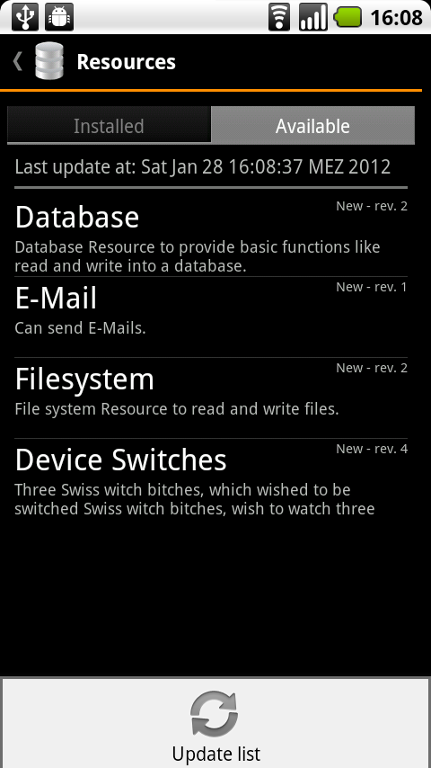
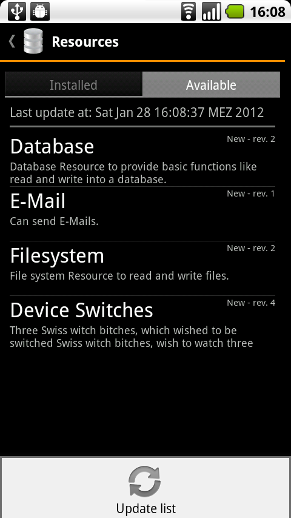

Versionshistorie
Version 3.1 (31.01.2012)
Korrekturen nach Spezifikationsreview in folgenden Kapiteln durchgeführt:- Kapitel
- Kapitel
- Kapitel
- Kapitel
Version 3.0 (29.01.2012)
Überarbeitung der Spezifikation für die dritte Iteration (Reviewkandidat)- Kapitel bearbeitet
- Kapitel hinzugefügt
- Kapitel hinzugefügt
- Kapitel bearbeitet
- Kapitel bearbeitet
- Kapitel bearbeitet
Version 2.2 (17.11.2011)
Offizielle Version für die zweite Iteration.Farbmarkierungen der Änderungen gegenüber Version 1.x entfernt.
Version 2.1 (16.11.2011)
Korrekturen nach Spezifikationsreview in den in Version 2.0 aufgelisteten Kapiteln durchgeführt.Version 2.0 (12.11.2011)
Überarbeitung der Spezifikation für die zweite Iteration (Reviewkandidat)- Kapitel bearbeitet
- Kapitel hinzugefügt
- Kapitel bearbeitet
- Kapitel bearbeitet
- Kapitel bearbeitet
Version 1.5 (18.08.2011)
- Korrektur nach Kunden-Review
Version 1.4 (17.08.2011)
- Verbesserungen nach Review eingearbeitet.
- Dies ist die erste Version für den Kunden.
Version 1.3 (15.08.2011)
- Reviewkandidat
Version 1.2 (14.08.2011)
- Hinzufügen des Kapitels "Benutzeroberfläche"
Version 1.1 (04.08.2011)
- Ausformulierungen einfacher Kapitel nach erstem Spezifikationsmeeting
Version 1.0 (24.07.2011)
- Erstes Gerüst der Spezifikationsvorlage
Einleitung
Zweck
Dieses Dokument stellt die Spezifikation des Projektes "Privacy Management Platform" dar. Es summiert die Ergebnisse der Analyse und repräsentiert die Grundlage für die spätere Entwicklung in einer Iteration. Es ist daher eine vertragliche Grundlage für Kunde und Entwickler, um die zu entstehende Software und ihre Funktionalität so ausführlich und vollständig wie möglich zu beschreiben, damit die weitere Entwicklung stets auf dieses Dokument zurückgreifen kann.
Die Spezifikation definiert dabei einen grafischen Prototypen für die spätere Benutzeroberfläche, beschreibt die gewünschten Funktionsabläufe und definiert im Begriffslexikon die Bedeutung von speziellen Begriffen, die in der Arbeitsumgebung verwendet werden. Da auch Begriffe neu definiert werden, um die Software möglichst knapp und für alle eindeutig zu beschreiben, empfiehlt es sich zunächst, einen Blick in das Begriffslexikon zu werfen und die Beschreibung vermeintlich klarer Begriffe dort nachzulesen.
Projektüberblick & Motivation
Die rasche Entwicklung in der Kommunikationsindustrie mit ihren unzähligen Möglichkeiten übersteigt die heutige Konfigurationssoftware. Nicht jeder kennt alle Anwendungen auf seinem Smartphone, ganz davon abgesehen welche Rechte die einzelnen Programme besitzen, ob diese auf den Internetanschluss zugreifen oder sogar Ihre E-Mails weiterleiten.
Im Rahmen des Studienprojekts "Privacy Management Platform" kurz "PMP" an der Universität Stuttgart wird eine Software entwickelt, die dem Benutzer das sichere Benutzen eines Android-Systems erlauben könnte.
Der Benutzer wird alle Apps und Ressourcen auf dem Android-System schnell und einfach verwalten können. Mittels einer ansprechenden grafischen Bedienungsoberfläche wird es möglich sein jeder einzelnen Anwendung, die mit PMP kompatibel ist, bestimmte Rechte zuzuweisen bzw. diese zu entziehen.
Leserkreis
Diese Spezifikation dient als zentrales Dokument für die folgenden Lesergruppen:
- den Entwicklern von PMP
- den Entwicklern von Androidapps bzw. zur PMP kompatiblen Ressourcen
- dem Kunden
- dem Betreuern des Studienprojekts
Konventionen
In diesem Dokument werden mehrere Konventionen verwendet, um knapp, übersichtlich, lesbar und treffend zu sein:
- Für Überbegriffe wie Benutzer oder Entwickler wird das generische Maskulinum verwendet. Da die Deutsche Sprache hier keine zufriedenstellende Alternative kennt, sind damit selbstverständlich auch alle weiblichen Leserinnen angesprochen.
- In diesem Dokument wird die deutsche Sprache verwendet; dabei ist allerdings zu beachten, dass sich übernommene oder übersetzte Begriffe aus dem Englischen nicht vermeiden lassen. Diese werden dann jedoch grammatikalisch an die Deutsche Sprache angepasst.
- Ein Verweis in diesem Dokument auf andere Kapitel wird so dargestellt:
- Die Versionsnummern sind nach dem Schema aufgebaut, dass zuerst die Iterationsnummer genannt wird und anschließend die Versionsnummer der Spezifikation in dieser Iteration. "3.2" bezeichnet z.B. die 2. Version der Spezifikation für die 3. Iteration.
Funktionale Anforderungen
Use Cases
Die Use Cases wurden in ein separates Dokument ausgelagert.
Anforderungen an PMP
Oberfläche
Die Oberfläche von PMP wird sich nahtlos in die Oberfläche von Android einfügen. Dazu gehört eine konsistente und logische Anordnung der Bedienelemente genauso wie eine nachvollziehbare und möglichst einfache Menüstruktur. Es gelten die Android User Interface Guidelines, von denen nur in begründeten Einzelfällen abgewichen wird.
Import/Export von Presets
PMP wird dem Benutzer ermöglichen Presets bequem über die Benutzeroberfläche zu importieren bzw. exportieren.
Details zum Importieren befinden sich im UseCase ID 211; zum Exportieren im UseCase ID 210.
Protokoll
PMP wird ein fortlaufendes, menschenlesbares Protokoll wichtiger Aktionen auf dem Gerät speichern. Die Protokollierung lässt sich in den Optionen aktivieren und dort auch die Granularität einstellen. Zu diesen Aktionen zählen:
Komponentenänderungen
- Installation und Deinstallation von Ressourcengruppen
- Registrierung und Deregistrierung von Apps
Einstellungsänderungen
- Ändern von Service Features im Simple Mode
- Ändern von Presets, Privacy Settings oder Kontexten im Expert Mode
Kontextänderungen
- Änderungen der Aktivität eines Kontextes1
- Änderung von Privacy-Setting-Werten bedingt durch die Aktivität von Kontexten1
Einstellungsanfragen
- Service Features von Apps
- Privacy-Setting-Werte von Ressourcen2
1 Ein Kontext gilt als aktiv, wenn seine Bedingung wahr ist. Die technische Berechnung bzw. deren Intervall bleibt von der Aktivität von Kontexten unabhängig. Der Kontext "Dienstags" wäre beispielsweise am Mittwoch deaktiviert, am Dienstag aber aktiviert, obwohl er in beiden Fällen zum Beispiel jede Minute neu überprüft wird.
2 Ressourcen müssen die Resourcen-Anfragen von Apps während der Ausführung überprüfen, um zu wissen, ob die anfragende App tatsächlich diesen Privacy-Setting-Wert zugewiesen bekommen hat. Um diese Berechtigungsprüfung vorzunehmen kommunizieren sie nötigerweise mit PMP, wo die Werte gespeichert sind.
Standardeinstellungen
PMP wird ohne weitere Konfiguration sofort nach der Installation ("Out of the Box") einsatzbereit sein.
Sonstiges
- PMP wird eine zu installierende Ressourcengruppe nicht akzeptieren, wenn die von der Ressourcengruppe zu implementierenden Schnittstellen der PMP-API nicht vorhanden sind. Selbiges gilt für das Installieren von Apps, die sich bei PMP registrieren.
- Innerhalb der PMP wird der bei Androidgeräten vorhandene "Zurück"-Button folgende Semantik erfüllen: Wird bei der aktuellen Bildschirmmaske der "Zurück"-Button betätigt, werden die gegebenenfalls vorgenommen Einstellungen oder Modifikationen gespeichert, die Bildschirmmaske verlassen und die vorhergehende Bildschirmmaske angezeigt.
- Sollte eine App von PMP entfernt werden (siehe Kapitel ), werden die vorgenommenen Einstellungen der App gelöscht und den Nutzer gefragt, ob die gegebenenfalls mitgebrachten Presets ebenfalls gelöscht, oder zu normalen Presets migriert werden sollen.
- Sollte eine App deinstalliert werden und zuvor nicht bei PMP deregistriert worden sein, wird PMP nach dem Deinstallieren der App diese aus dem PMP-System entfernen. PMP wird vorgenommene Einstellungen an der App nicht löschen, sodass sie bei einer Neuinstallation der App sofort zur Verfügung stehen.
Nicht-Funktionale Anforderungen
Bedienbarkeit
PMP wird von einem durchschnittlichen Android-Nutzer bedient werden können. Wo möglich, wird PMP gute Standardeingaben vorgeben und direkte Validierung über die Auswirkungen von Änderungen zur Verfügung stellen.
Der Benutzer wird entsprechende Warnungen erhalten, sobald er Aktionen durchführt die nicht oder nur schwer rückgängig gemacht werden können. Ungewollte Aktionen wird der Benutzer abbrechen können. Bei länger dauernden Aufgaben wird der Benutzer darüber in Kenntnis gesetzt.
Nutzungskontext
Personae
| Die Durchschnittsnutzerin: Kathrin | |
|---|---|
| Kathrin ist 25 Jahre alt und besitzt ihr Android Smartphone seit 3 Jahren. Sie studiert im 5. Semester Geschichte und Deutsch auf Lehramt und hat generell kein Interesse an Technologie und Softwareentwicklung. Trotzdem nutzt sie einige Apps, die ihr den Alltag erleichtern. Generell gehört Kathrin zu den Menschen, denen Datenschutz am Herzen liegt. |  |
| Zugehöriges Nutzungsszenario: N-1 | |
| Der Expertennutzer: Moritz | |
|---|---|
| Moritz ist 28 Jahre alt, arbeitet an einer deutschen Universität als wissenschaftlicher Mitarbeiter im Bereich Elektrotechnik und besitzt sein Android Smartphone seit 4 Jahren. Er hat großes Interesse daran, dass seine installierten Apps keine unnötigen oder nicht von ihm gewollten Ressourcen nutzen. Weiterhin liebt Moritz feingranulare Konfigurationsmöglichkeiten. |  |
| Zugehöriges Nutzungsszenario: N-2 | |
Nutzungsszenarien
Nutzungsszenario N-1
Vor kurzem entdeckte Kathrin zufällig im Android-Marketplace eine zu PMP kompatible Kalender-App, die für ihre Bedürfnisse vollkommen ausreichend ist und ihre Kalendereinträge einfach und intuitiv verwalten kann. Nachdem ein Freund ihr von PMP erzählt hat, verwendet sie nun PMP um ihre Kalender-App zu konfigurieren. Zum Beispiel möchte sie auf keinen Fall, dass die Kalender-App die Möglichkeit bietet ihre Kalender-Einträge per E-Mail zu versenden. Aus diesem Grund deaktiviert sie das Service Feature "Einträge per E-Mail versenden", wodurch die Kalender-App keinen Zugriff auf die E-Mail-Ressourcengruppe erhält.
Nutzungsszenario N-2
Durch einen Kollegen erfuhr Moritz, dass seit kurzem die App PMP im Android-Marketplace verfügbar ist. Nachdem er PMP und die zu PMP kompatible Kalender-App heruntergeladen und installiert hatte, war er über die feingranularen Einstellungsmöglichkeiten erfreut. Moritz kann sich nun selbst Presets erstellen und definieren, auf welche Ressourcengruppen die Kalender-App Zugriff bekommt. Da er nicht möchte, dass die Kalender-App Zugriff auf die Dateisystem-Ressourcengruppe erhält, lässt er die zugehörigen Privacy Settings deaktiviert. Als Konsequenz seiner Restriktion ist das Service Feature "Kalendereinträge im- und exportieren" abgeschaltet, welches Moritz sowieso nicht nutzen möchte.
Quantitative Anforderungen
Leistungsanforderungen
PMP wird bei Verwendung eines Motorola Defy Smartphones Antwortzeiten von unter einer Sekunde aufweisen. Sollte eine Antwort länger andauern, wird der Benutzer durch eine Verarbeitungs- oder Fortschrittsanzeige in Kenntnis gesetzt.
Mengengerüst
Die Software wird ohne weitere Probleme mindestens 10 Apps mit jeweils 5 verschiedenen Service Features verwalten.
Robustheit
Die PMP stürzt bei der Installation von Ressourcengruppen oder Apps, die die PMP-API verwenden und fehlerhafte Schnittstellen aufweisen, nicht ab.
Sicherheit
Es sind keine speziellen Sicherheitsfeatures notwendig.
Portabilität & Kompatibilität
PMP wird zu allen Android-Systemen der Versionen 2.x (ab Version 2.1.1 aufwärts) kompatibel sein.
Internationalisierung
Die einzige verfügbare Sprache für PMP ist Englisch, die Oberfläche wird jedoch für beliebig viele Sprachen erweiterbar sein. Die Sprache des Handbuches ist Deutsch, wobei die Screenshots auf die englische Oberfläche verweisen werden.
Protokollierung
Eine Protokollierung aller wichtigen Systemereignisse, so dass Ausführungszeitpunkt, die ausgeführte Aktion und eventuelle Probleme registriert werden können, ist für die 3. Iteration geplant.
Installation
Im Handbuch wird eine genaue Beschreibung der Installation vorliegen.
Erweiterbarkeit
Die Software wird hinsichtlich folgender Punkte erweiterbar sein:
- Internationalisierung (bisher englische Benutzeroberfläche)
- Ressourcen/Ressourcengruppen
- Presets
- verwaltete Apps
Wartbarkeit
Es werden keine speziellen Anforderungen an die Wartbarkeit von PMP gestellt. Folgende allgemeine Anforderungen garantieren jedoch eine hohe Wartbarkeit von PMP:
- Es wird eine ausführliche Dokumentation des Sourcecodes in Form von (Javadoc-)Kommentaren erstellt.
- Die Software wird modular aufgebaut sein.
Abgeschlossenheit
PMP wird ohne externe Abhängigkeiten entwickelt.
Gesetzliche Einschränkungen
Es gibt keine generellen gesetzlichen Richtlinien oder Normen, die eingehalten werden müssen. Die Universität Stuttgart wird ein zeitlich und personell unbegrenztes Nutzungsrecht an der Software erhalten. PMP wird unter der Open-Source Software Lizenz "Apache License 2.0" freigegeben.
Benutzeroberfläche
Hauptmenü
{kind=link}
Apps
App-Übersicht

Auf diesem Bildschirm werden alle Apps, die an der PMP registriert sind, aufgelistet. Von jeder App werden ein Icon, Name und Beschreibung (gekürzt) angezeigt.
Mit einem langen Touch auf eine App wird nachfolgendes Menü angezeigt. Ein kurzer Touch führt zum -Bildschirm.
Aktionsmenü für App

Es kann zwischen folgenden Aktionen gewählt werden:
App Details: Öffnet den -Bildschirm.
Open App: Öffnet die App selbst.
Remove App: Entfernt die App aus PMP.
App-Details
{kind=link}
Zu der App werden Name, Icon, Beschreibung angezeigt.
Im Presets-Tab wird die Übersicht über alle zugewiesenen Presets angezeigt (Ähnlich zu , nur ohne Papierkorb).
Im Menü kann die App geöffnet oder aus PMP entfernt werden.
Service Features
Im nachfolgenden Kapitel können Service Features nur dann geändert werden wenn der Expert-Mode nicht aktiviert ist.
Service Features-Tab
{kind=link}
Im "Service Features"-Tab werden alle Service Features angezeigt.
Jedes Service Feature wird mit Namen, und Beschreibung (gekürzt) angezeigt.
Ist ein Service Feature aktiviert, wird es grün hinterlegt.
Ist ein Service Feature deaktiviert, wird es rot hinterlegt.
Ist ein Service Feature grau hinterlegt fehlen Ressourcengruppen zur Nutzung.
Wird auf ein Service Feature getippt öffnet sich der -Bildschirm.
EIn Service Feature wird orange umrandet, wenn es durch die vorhergehende Aktion hervorgehoben werden soll (z.B. Service Feature-Ändern ausgelöst durch eine App).
Service Feature-Details
{kind=link}

Im Details-Bildschirm der Service Features werden alle Details (Name, Beschreibung, benötigte Privacy Settings) zum Service Feature angezeigt.
Über ein Preset gesetzte Privacy Settings werden mit einem Haken versehen, noch fehlende Berechtigungen mit einem roten X.
Über einen Button kann das Service Feature aktiviert/deaktiviert werden.
Sollte eine Ressourcengruppe fehlen so werden die Details wie in der rechten Abbildung gezeigt angezeigt.
In Abbildung 2 können die fehlenden Ressourcengruppen direkt über einen Button mit einem Klick installiert werden.
Presets
Presets sind nur im Expert-Mode verfügbar.
Presets-Übersicht


Aktive und inaktive Presets werden mit einer verkürzten Beschreibung im "Presets-Übersicht"-Bildschirm angezeigt.
Nach Tippen auf ein beliebiges Preset öffnet sich der "Preset-Detail"-Bildschirm. Ein langer Touch auf ein Preset öffnet Abbildung 2.
Über das Menü kann ein neues Preset angelegt werden. Tippen auf den "Add Preset"-Button öffnet sich ein Popup wie in Abbildung 3. -Bildschirm.
Abbildung 2 wird um den Eintrag "Preset exportieren" erweitert.
Das Menü aus Abbildung 1 wird um den Menü-Eintrag "Presets importieren" erweitert.
Die Menü-Einträge aus Abbildung 2 werden auch im Menü von und angezeigt.
Preset-Details: Apps
{kind=link}
Durch drücken auf "Assign Apps" im Menü (wird nicht dauerhaft angezeigt) wird eine Liste aller nicht zugewiesenen Apps angezeigt, weitere Apps können so hinzugefügt werden.
Ein Touch auf eine App öffnet ein Kontextmenü (äquivalent zu anderen Kontextmenüs) mit folgenden Optionen:
- "Show details": Details der App anzeigen
- "Remove": App aus Preset entfernen
Preset-Details: Privacy Settings
{kind=link}


Ein langer Touch auf ein Privacy Setting öffnet ein Kontextmenü mit folgenden Optionen:
- Details zum Privacy Setting angezeigen
- Dem Privacy Setting ein Kontext hinzufügen
- Privacy Setting ändern
- Privacy Setting aus dem Preset enfernen

Durch drücken auf "Assign Privacy Setting" im Menü (wird nicht dauerhaft angezeigt) wird Abbildung 2 angezeigt.
In Abbildung 2 wird eine sortierte Liste installierter Ressourcengruppen angezeigt. Tippen auf eine Ressourcengruppe zeigt alle verfügbare Privacy Settings an.
In Abbildung 1 wird die Anzeige eines Privacy Settings um die Auflistung aller zugewiesenen Kontexte erweitert, wie in Abbildung 3 ersichtlich.
Wird auf ein Kontext getippt, so öffnet sich eine Anzeige zum ändern des Kontextes (rechte Abbildung).
Wird ein Kontext durch ein Privacy Setting in einem anderen Preset überschrieben, so wird der Kontext mit einem Ausrufezeichen markiert. Durch antippen werden alle in Konfliktstehende Presets angezeigt.
Ressourcengruppen
 

{kind=link}

Abbildung 1: Zeigt installierte Ressourcengruppen mit Namen, Icon und verkürzter Beschreibung an.
Abbildung 2: Zeigt verfügbare Ressourcengruppen mit Namen und verkürzter Beschreibung an. Im Menü (wird nicht dauerhaft angezeigt) kann die Liste aktualisiert werden.
Abbildung 3: Zeigt die Details einer Ressourcengruppe an.
Verfügbare Ressourcengruppen können so installiert werden. Die Installation beginnt sofort nach einem tipp auf "Install". Der Installationsfortschritt wird durch einen Fortschrittsbalken visualisiert.
Werden die Details einer installierten Ressourcengruppe angezeigt, so kann an Stelle von "Install" die Ressourcengruppe deinstalliert werden.
Einstellungen
Übersicht
{kind=link}
Zeigt Checkbox und Beschreibung der verfübaren Einstellungen an. Tippen auf Eintrag um ihn zu aktivieren/deaktivieren.
Begriffslexikon
App
| Begriff | App |
|---|---|
| Synonyme | Applikation |
| Bedeutung | Eine App ist eine lauffähige Software, die auf einem Android-System ausgeführt wird. Eine App definiert mindestens ein Service Feature, das mehrere Services enthalten kann. Eine App kann über eine Schnittstelle Ressourcengruppen über PMP benutzen. Eine App kann eigene Ressourcengruppen in die PMP einfügen. |
| Beispiele | Die Demo-Szenarien, die entwickelt werden, sind Apps. |
| Abgrenzung | Nicht unter den Begriff App fällt zur PMP inkompatible, nicht-ausführbare oder nicht-mobile Software. |
| Gültigkeit | Eine App erlangt Bedeutung für die PMP, sobald über sie Ressourcengruppen oder Kontexte importiert werden oder sie in PMP für Ressourcenzugriffe eingebunden wird. Die App wird wieder irrelevant, sobald der Import aufgehoben wird oder die App deinstalliert wird. |
| Bezeichnung | Eine App wird durch ihren Namen identifiziert und durch ihre Funktionalität beschrieben. |
| Unklarheiten | - |
| Querverweise | , , , |
Expert Mode
| Begriff | Expert Mode |
|---|---|
| Synonyme | Expertenmodus |
| Bedeutung | Der Expert Mode ist eine Darstellungsart der Optionen für den Benutzer der PMP. Dabei wird ihm maximale Freiheit der einzelnen Einstellungen bezüglich jeden Privacy Settings gelassen. Des Weiteren kann er diese Einstellungen kontext-sensitiv machen. |
| Beispiele | - |
| Abgrenzung | Der Expert Mode ist nicht der "normale", einfache Modus "Simple Mode". |
| Gültigkeit | - |
| Bezeichnung | Der Expert Mode ist einzigartig in der PMP. |
| Unklarheiten | - |
| Querverweise | , , |
Kontext
| Begriff | Kontext |
|---|---|
| Synonyme | - |
| Bedeutung | Ein Kontext beschränkt ein einem Preset zugewiesenes Privacy Setting. Ein Kontext kann an zeitliche oder örtliche Bedingungen geknüpft sein. |
| Beispiele | Der Kontext "Kein Werktag" beschränkt das Priavcy Setting "Internet" im Preset Arbeit auf "false". |
| Abgrenzung | - |
| Gültigkeit | Ein Kontext bleibt bestehen solange er an ein Privacy Setting gebunden ist und das zugehörige Preset aktiv ist. |
| Bezeichnung | Der Kontext wird durch das Privacy Setting, die Einstellungen und das zugehörige Preset eindeutig identifiziert. |
| Unklarheiten | - |
| Querverweise | , |
Preset
| Begriff | Preset |
|---|---|
| Synonyme | Rolle |
| Bedeutung | Ein Preset ist eine Zusammenfassung der konkreten Konfiguration einer Menge von Privacy Settings. Ein Preset kann kontext-abhängig sein. Ein Preset kann einer oder mehreren Apps zugewiesen werden. |
| Beispiele | Ein Preset könnte eine Zusammenfassung aller Lese-Rechte auf alle Datenbanken sein. |
| Abgrenzung | Ein Preset ist nicht nur eine Zusammenfassung einer Menge von Privacy Settings. Ein Preset ist keine feststehende Bezeichnung für eine App. |
| Gültigkeit | Das Preset bleibt gültig, solange die entsprechende App in PMP eingebunden ist. Ein Preset kann nur entstehen, wenn die enthaltenden Privacy Setting bereits bekannt sind. |
| Bezeichnung | Das Preset wird durch seinen Namen eindeutig identifiziert. |
| Unklarheiten | - |
| Querverweise | , , |
Privacy Setting
| Begriff | Privacy Setting |
|---|---|
| Synonyme | Privacy Flag, Privacy Level |
| Bedeutung | Ein Privacy Setting ist eine Ressourcen-Einstellung in PMP, die durch die Ressourcengruppe definiert wird. Ein Privacy Setting kann kontext-abhängig sein. Seine konkrete Konfiguration für eine App wird beim Zugriff auf eine Ressource der Ressourcengruppe mitübergeben. Damit kann die Ressource über die Privatsphäre der zur Verfügung gestellten Inhalte entscheiden. |
| Beispiele | Die Ressource "Schachspiel-Highscore-Datenbank" könnte Privacy Settings wie "Lesen" oder "Schreiben" anbieten. |
| Abgrenzung | Ein Privacy Setting ist weder ein Service Feature noch ein Preset. |
| Gültigkeit | Das Privacy Setting bleibt gültig, solange die entsprechende Ressourcengruppe in PMP eingebunden ist. |
| Bezeichnung | Das Privacy Setting wird durch die zugehörige Ressourcengruppe und seinen Namen eindeutig identifiziert. |
| Unklarheiten | - |
| Querverweise | , , , , , |
Ressource
| Begriff | Ressource |
|---|---|
| Synonyme | - |
| Bedeutung | Eine Ressource ist eine konkrete Funktions- oder Daten-Schnittstelle, deren Privatsphäre reguliert werden soll. |
| Beispiele | Die Ressourcengruppe "E-Mail-Zugriff" könnte die Ressourcen "Absender", "Empfänger", "Betreff", "Inhalt" und "Anhang" enthalten. |
| Abgrenzung | Eine Ressource ist keine Ressourcengruppe. Eine Ressource ist nach Definition auch keine allgemeine, eingebundene Datei. |
| Gültigkeit | Die Ressource bleibt gültig, solange die entsprechende Ressourcengruppe in PMP eingebunden ist. |
| Bezeichnung | Die Ressource wird durch die zugehörige Ressourcengruppe und seinen Namen eindeutig identifiziert. |
| Unklarheiten | - |
| Querverweise |
Ressourcengruppe
| Begriff | Ressourcengruppe |
|---|---|
| Synonyme | Ressourcenkategorie |
| Bedeutung | Eine Ressourcengruppe ist eine sinnverwandte Zusammenfassung einzelner Ressourcen. |
| Beispiele | Es könnte eine Ressourcengruppe zum Zugriff auf das Dateisystem, auf GPS-Empfang oder auf einen Web-Service geben. |
| Abgrenzung | Eine Ressourcengruppe ist weder eine Ressource noch eine Gruppe von Ressourcengruppen. |
| Gültigkeit | Die Ressourcengruppe bleibt gültig, solange die entsprechende App in PMP eingebunden ist. |
| Bezeichnung | Die Ressourcengruppe wird durch die zugehörige App und ihren Namen eindeutig identifiziert. |
| Unklarheiten | - |
| Querverweise | , |
Service
| Begriff | Service |
|---|---|
| Synonyme | Dienst |
| Bedeutung | Ein Service ist ein konkreter Funktionalitätsteil einer App, der Zugriff auf Ressourcen benötigen kann. |
| Beispiele | Ein Service in der App "Prüfungsamt" könnte "Prüfungsnote abfragen" sein. |
| Abgrenzung | Ein Service ist keine App. PMP und die Ressourcen laufen als Service im Hintergrund, sind aber keine Services in dem hier genannten Sinne. |
| Gültigkeit | Der Service bleibt gültig, solange das entsprechende Service Feature in PMP aktiviert ist. |
| Bezeichnung | Der Service wird durch das zugehörigen Service Feature, die zugehörige App und ihren Namen eindeutig identifiziert. |
| Unklarheiten | - |
| Querverweise | , , |
Service Feature
| Begriff | Service Feature |
|---|---|
| Synonyme | - |
| Bedeutung | Ein Service Feature ist eine Menge von Services, die bereitgestellt werden unter der Voraussetzung, dass eine Menge von Privacy Settings erfüllt wird. |
| Beispiele | Die App "Kalender" könnte die Service Features "Kalendereinträge lesen", "Kalendereinträge schreiben" und "Kalendereinträge per E-Mail versenden" anbieten. Dabei werden jeweils höhere Einstellungen der Privacy Setting verschiedener Ressourcengruppen verlangt, aber dafür auch mehr Services angeboten. |
| Abgrenzung | Ein Service Feature ist weder ein Privacy Setting noch ein Preset. |
| Gültigkeit | Ein Service Feature bleibt gültig, solange die entsprechende App in PMP eingebunden ist. Es können mehrere Service Features gleichzeitig aktiviert sein. |
| Bezeichnung | Das Service Feature wird durch die zugehörige App und ihren Namen eindeutig identifiziert. |
| Unklarheiten | Das aus der Spezifikationsversion 1.x bekannte Service Level wird vom Service Feature abgelöst. |
| Querverweise | , , , |
Simple Mode
| Begriff | Simple Mode |
|---|---|
| Synonyme | einfacher Modus |
| Bedeutung | Der einfache Modus ist die voreingestellte Darstellungsart der Optionen für den Benutzer von PMP. Dabei werden alle nicht benötigten Bedienelemente ausgeblendet und die Konfigurationsmöglichkeiten sind deutlich reduziert. |
| Beispiele | - |
| Abgrenzung | Der einfache Modus ist nicht der Expert Mode. |
| Gültigkeit | - |
| Bezeichnung | - |
| Unklarheiten | - |
| Querverweise | ,, |